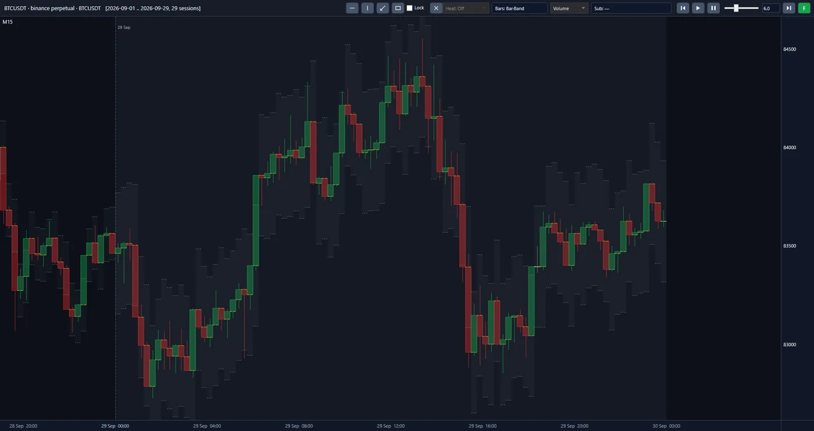
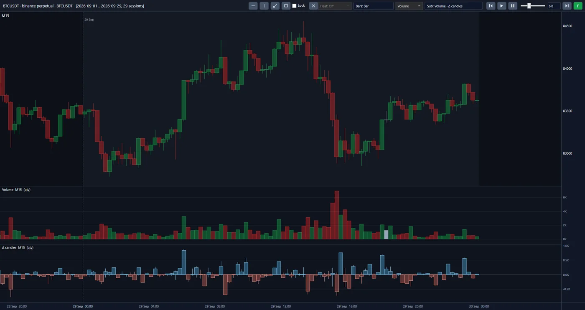
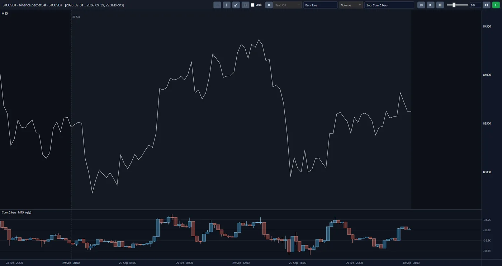

معرفیIntroduction
بازار رمزارز هرگز تعطیل نمیشود و در یک جا هم نیست. هر رمزارز همزمان در دهها صرافی معامله میشود و در هر کدام، کسی باید همیشه آمادهی خرید و فروش باشد. این طرفِ همیشهحاضر بازارساز است: اندکی ارزانتر میخرد، اندکی گرانتر میفروشد و نیازی ندارد جهت قیمت را بداند. خطرش این است که درست پیش از یک حرکت بزرگ، در سمت نادرست معامله کرده باشد؛ و در بازاری که میان چند صرافی پخش است، آن حرکت اغلب از جای دیگری آغاز میشود. The crypto market never closes, and it is not in one place either. Each cryptocurrency trades on dozens of exchanges at once, and on each of them someone must always be ready to buy and sell. That ever-present counterparty is the market maker: they buy a little cheaper, sell a little dearer, and do not need to know which way the price will go. Their risk is having traded on the wrong side just before a large move; and in a market spread across several exchanges, that move often starts somewhere else.
ما پیش از نوشتن الگوریتم، کل این بازار را ثبت کردهایم و ثبت میکنیم. Before writing the algorithm, we have recorded this whole market, and keep recording it.
پروژهی مارکتمیکر کریپتو بازار ۲۲ رمزارز پرمعامله را در ۱۶ صرافی جهانی، در سطح تکتک معاملهها و سفارشها، گرد میآورد. دامنهی کار یک سال کامل برای هر رمزارز است، یعنی ۶۰ ترابایت دادهی خام. مقصد ما یک میز بازارسازی خودکار است که سرمایه را با الگوریتمی اداره میکند که روی همین تاریخچه آموخته و آزموده شده است. The Crypto Market Maker project gathers the market of 22 heavily traded cryptocurrencies on 16 global exchanges, at the level of every single trade and order. The scope of the work is one full year for each cryptocurrency, that is, 60 terabytes of raw data. The destination is an automated market-making desk that runs capital with an algorithm trained and tested on this same history.
از داخل پلتفرمInside the platform
اینها تصویرهای واقعی از پلتفرم پروژهاند، نه طرح. هر سه نما یک بازار را نشان میدهند: قرارداد دائمی BTCUSDT در بایننس، ۲۹ روز از سپتامبر ۲۰۲۶، با کندلهای ۱۵ دقیقهای که از معاملات بایگانیشده ساخته شدهاند. برای بزرگتر دیدن، روی تصویر بزنید. These are real screens from the project's platform, not mock-ups. All three views show one market: the BTCUSDT perpetual contract on Binance, 29 days of September 2026, with 15-minute bars built from the archived trades. Click the image to enlarge it.



کندلهای ۱۵ دقیقهای در نمای Bar-Band: هر کندل همراه با نوار سایهدار دور آن. Fifteen-minute bars in the Bar-Band view: each bar with the shaded band around it.
همان کندلها، و زیر آن دو پنل: حجم هر کندل و کندلهای دلتا (Δ candles). The same bars, and beneath them two panels: the volume of each bar and the delta candles (Δ candles).
قیمت به شکل خط، و زیر آن دلتای تجمعی به شکل کندل (Cum Δ bars). Price as a line, and beneath it the cumulative delta drawn as bars (Cum Δ bars).
رویکردApproach
نخست بازار را کامل و درست ثبت میکنیم، سپس آن را از نو میسازیم، و الگوریتم را در بازسازی همان بازار میآموزیم و میسنجیم. کار در سه مرحله پیش میرود: First we record the market completely and correctly, then we rebuild it, and we train and measure the algorithm inside a reconstruction of that same market. The work proceeds in three stages:
-
از بازار به بایگانیFrom the market to the archive
یک خط خودکار، دادهی بازارهای نقدی و آتی هر ۱۶ صرافی را روز به روز دریافت، فشرده، راستیآزمایی و ذخیره میکند. حاصل، بایگانی یکدستی است که هر فایل آن با منبع سنجیده شده است. این مرحله ساخته شده و شبانهروز در حال کار است.
An automated line receives, compresses, verifies and stores the spot and futures data of all 16 exchanges, day by day. The result is a uniform archive in which every file has been measured against the source. This stage is built and runs around the clock.
-
از بایگانی به تصویر کامل بازارFrom the archive to the full picture of the market
پلتفرم ما هر روزِ بازار را همانگونه که رخ داده از نو میسازد و روی نمودار نشان میدهد. بخش معاملات آن ساخته و آزموده شده است. بازسازی دفتر سفارش، یعنی فهرست سفارشهای منتظر در هر لحظه، گام بعدی خواهد بود.
Our platform rebuilds each day of the market exactly as it happened and shows it on a chart. Its trades part is built and tested. Rebuilding the order book, the list of waiting orders at each moment, will be the next step.
-
از تصویر بازار به الگوریتم و اجرای آزمودهFrom the picture of the market to the algorithm and tested execution
الگوریتم بازارسازی با یادگیری ماشین و تحلیل آماری از همین داده خواهد آموخت که سفارش کجا گذاشته شود، از کدام معامله پرهیز شود و چه زمانی باید کنار کشید. آزمون آن در یک شبیهساز اجرا انجام خواهد شد که رفتار خودِ صرافی را بازسازی میکند. معیار داوری، نتیجهی مالی خالص پس از کسر همهی هزینهها خواهد بود.
With machine learning and statistical analysis, the market-making algorithm will learn from this same data where to place an order, which trade to avoid and when to step aside. It will be tested in an execution simulator that rebuilds the behaviour of the exchange itself. The yardstick will be the net financial result after every cost.
در کنار بازارسازی، معاملهی کوتاهمدت: الگوریتم دومی که با حرکتهای کوتاهِ قیمت همراه میشود روی همین زیرساخت و همین شبیهساز ساخته خواهد شد. هر دو به یک دانش تکیه دارند: تشخیص اینکه کدام حرکت ادامه مییابد. بازارساز با این دانش کنار میکشد و معاملهگر کوتاهمدت با آن وارد میشود. Alongside market making, short-term trading: a second algorithm that goes along with short price moves will be built on this same infrastructure and this same simulator. Both lean on one piece of knowledge: telling which move will carry on. The market maker uses it to step aside, and the short-term trader uses it to enter.
آنچه برجسته استWhat stands out
-
خطی که بدون ناظر کار میکند.A line that works without a supervisor.
گردآوری دهها ترابایت داده از ۱۶ منبع، اگر به مراقبت انسان وابسته باشد، با اولین قطعی شبانه متوقف میشود. خط ما از قطعی شبکه، خطای منبع و پرشدن دیسک خودش برمیگردد و فقط چیزی را کنار میگذارد که خودبهخود درست نمیشود. این رفتار در برابر بیش از ۵۰ سناریوی خرابی آزموده شده است.
Gathering tens of terabytes from 16 sources, if it depends on human care, stops at the first outage in the night. Our line recovers by itself from network outages, source errors and a full disk, and sets aside only what will not fix itself. That behaviour has been tested against more than 50 failure scenarios.
-
دادهای که درستیاش اثبات شده است.Data whose correctness has been proven.
الگوریتمی که روی دادهی ناقص آموخته باشد، خطای داده را بهجای الگوی بازار یاد میگیرد. هر فایل ما پیش از ذخیره با سه سنجش مستقل با منبع مقایسه میشود؛ در یک نمونهی یکماهه، ۳۷۶ میلیون معامله از ۱۲۶ بازار از نو ساخته شد و هیچ اختلافی با منبع نداشت. هر جا خودِ منبع کسری دارد، با نام ثبت و پیگیری میشود و پنهان نمیماند.
An algorithm trained on incomplete data learns the data's errors instead of the market's patterns. Each of our files is compared with the source by three independent measures before it is stored; in a one-month sample, 376 million trades from 126 markets were rebuilt and showed no difference from the source. Wherever the source itself has a gap, it is recorded by name and followed up, and does not stay hidden.
-
کمتر از نصف حجم، بدون ازدسترفتن یک رقم.Less than half the size, without losing a digit.
نگهداری و جابهجایی دهها ترابایت داده هزینهی پیوسته دارد. قالب ذخیرهسازی ما همان داده را در کمتر از نصف حجمِ فشردهی منبع نگه میدارد و فایل اصلی بایت به بایت از آن بازمیگردد. هزینهی ذخیره و زمان انتقال به همین نسبت کم میشود.
Keeping and moving tens of terabytes has a continuous cost. Our storage format holds the same data in less than half the source's compressed size, and the original file comes back from it byte for byte. The cost of storage and the time of transfer fall in the same proportion.
-
تصویر کل بازار، نه یک صرافی و نه یک رمزارز.The picture of the whole market, not one exchange and not one coin.
قیمت در یک صرافی ساخته نمیشود و بازارسازی که فقط صرافی خودش را میبیند، حرکت را زمانی میفهمد که به او رسیده است. ما هر ۱۶ صرافی را با یک قالب و یک ساعت کنار هم داریم. الگوریتم میتواند از رابطهی میان بازارها بیاموزد، نه فقط از یکی.
Price is not made on one exchange, and a market maker who sees only their own exchange understands a move when it has already reached them. We hold all 16 exchanges side by side in one format and on one clock. The algorithm can learn from the relationship between markets, not from just one.
-
بازسازیای که آینده را نمیداند.A reconstruction that does not know the future.
بسیاری از آزمونها ناخواسته از خبری استفاده میکنند که در آن لحظه هنوز نرسیده بود. برای هر معامله دو زمان ثبت شده است: لحظهی وقوع در صرافی و لحظهی رسیدن خبر. پلتفرم در هر لحظه فقط همان را نشان میدهد که آن روز دیدنی بود، و خروجی آن با هر تعداد پردازنده یکسان است.
Many tests unintentionally use information that had not yet arrived at that moment. Two times are recorded for each trade: the moment it happened on the exchange and the moment the news of it arrived. At each moment the platform shows only what could be seen that day, and its output is the same with any number of processors.
-
شبیهسازی که نتیجهاش در اجرا هم برقرار بماند.A simulation whose result still holds in execution.
بسیاری از راهبردها روی کاغذ سودآورند و در عمل نه، چون آزمونشان فرض میکند سفارش بیدرنگ و با قیمت تابلو انجام میشود. در شبیهساز ما سفارش با تأخیر به صرافی خواهد رسید، در صف نوبت خواهد گرفت و تکهتکه پر خواهد شد یا پشت صف خواهد ماند. الگوریتم در طیفی از سرعت و کارمزد آزموده خواهد شد تا پیش از هر تعهد مالی روشن باشد طرح در کدام شرایط توجیه دارد.
Many strategies are profitable on paper and not in practice, because their test assumes an order fills at once at the quoted price. In our simulator an order will reach the exchange with a delay, take its turn in the queue, and fill in part or stay at the back of the queue. The algorithm will be tested across a range of speeds and fees, so that before any financial commitment it is clear under which conditions the plan is justified.
مسیر پیش روThe road ahead
-
انجامشدهDone
خط خودکار گردآوری، قالب ذخیرهسازی، پنل دریافت داده و بخش معاملات پلتفرم ساخته و روی دادهی واقعی آزموده شدهاند.
The automated collection line, the storage format, the data-download panel and the trades part of the platform are built and tested on real data.
-
امروزNow
امروز خط گردآوری رمزارزها را یکی پس از دیگری میگیرد و ما بخشهای بعدی پلتفرم را میسازیم.
Today the collection line is taking the cryptocurrencies one after another, and we are building the next parts of the platform.
-
پس از آنNext
پس از آن بازسازی دفتر سفارش، شبیهساز اجرا، و ساخت و آزمون الگوریتم بازارسازی و سپس الگوریتم معاملهی کوتاهمدت خواهد آمد.
After that come rebuilding the order book, the execution simulator, and building and testing the market-making algorithm and then the short-term trading algorithm.
-
گام پایانیFinal step
گام پایانی، اتصال به دادهی زنده، دورهای آزمایشی با سرمایهی محدود و بازارسازی با سرمایهی واقعی روی سروری در مجاورت موتور صرافی است.
The final step is connecting to live data, a trial period with limited capital, and market making with real capital on a server next to the exchange's engine.
فناوریTechnology
خط گردآوری، قالب ذخیرهسازی و هستهی پلتفرم با راست و نمودار با سیشارپ نوشته شده است. پردازش موازی است: ۳۷۶ میلیون معاملهی یک ماه در کمتر از سه دقیقه ساخته و خودآزمایی میشود. هیچ نسخهای منتشر نمیشود مگر پس از یک اجرای کامل و بیخطا از ابتدا تا انتها. The collection line, the storage format and the platform's core are written in Rust, and the chart in C#. Processing is parallel: one month's 376 million trades are built and self-checked in under three minutes. No version is released except after one complete, error-free run from start to finish.